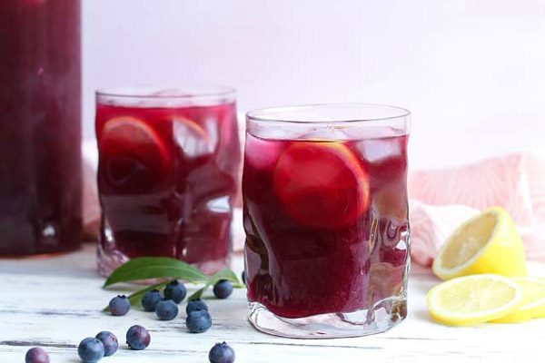
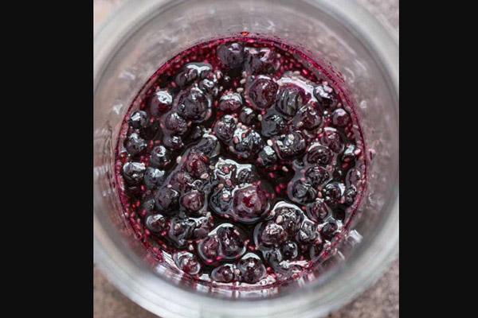
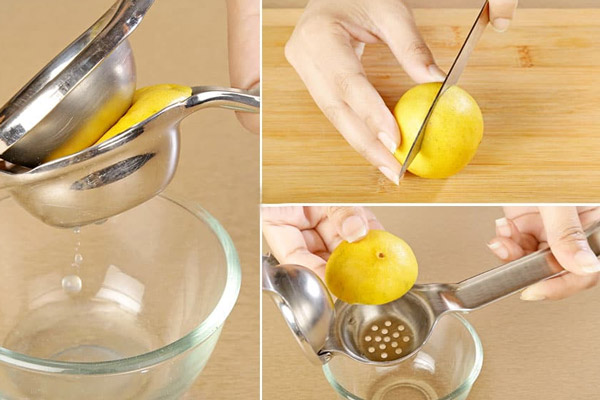

Nước chanh việt quất là một sự kết hợp “ăn ý” giữa vị chanh chua chua và việt quất thơm lạ miệng, sẽ là hương vị đồ uống giải nhiệt cực đã trong những ngày hè.
50gr quả việt quất hoặc syrup việt quất
25gr đường
40ml chanh
Đá viên
Hướng dẫn làm syrup việt quất
Trước tiên, để thực hiện cách pha nước chanh việt quất, bạn cần làm syrup việt quất với việt quất tươi và đường. Cho 25gr đường, 50gr việt quất và 300ml nước vào nồi nấu sôi. Bạn đun nóng hỗn hợp sao ở mức lửa vừa cho việt quất chín nhừ ra, sau đó thì hạ lửa nhỏ để syrup cô đặc lại.
Hoặc bạn có thể dùng muỗng gỗ dằm đều việt quất tiết ra nước và nhanh mềm hơn. Sau khi syrup đã đạt chuẩn bạn rọc hỗn hợp qua rây hoặc vải thưa.
Pha chế nước chanh việt quất màu đẹp
Bạn có thể sử dụng bình thủy tinh lớn, cho lần lượt syrup việt quất, nước cốt chanh và một ít nước lọc rồi khuấy đều lên. Sau đó, bạn đặt bình trong tủ lạnh cho đến khi nước trong bình lạnh đi.
 Cách trang trí nước chanh việt quất
Bạn có thể uống nước chanh ướp lạnh hoặc cho thêm đá tùy theo khẩu vị. Bạn trang trí vào ly nước chanh vài quả việt quất tươi, cắt một lát chanh mỏng gắn ở miệng ly là tuyệt vời nhất. Như vậy bạn đã hoàn thành xong cách pha nước chanh việt quất cực thơm ngon và đã khát rồi.
Yêu cầu thành phẩm
Ly nước chanh việt quất có màu hồng tím trông thật bắt mắt. Nước chanh việt quất có vị ngọt vừa phải, thơm nức hương việt quất tươi làm ai cũng mê mẩn. Hơn thế khi thưởng thức nước chanh việt quất, được cảm giác nếm thử những trái việt quất giòn giòn vô cùng thích thú.
Bắt kịp xu hướng đồ uống tốt cho sức khỏe, bạn nên thay đổi thói quen lựa chọn các loại đồ uống có sẵn, có ga… thường xuyên. Thay vào đó là những cốc nước ép, sinh tố tự nhiên tại nhà, 100% trái cây tự nhiên, sử dụng lượng đường vừa phải. Bằng những bước đơn giản như trên, bạn hoàn toàn có thể tự tin học pha chế một ly nước chanh việt quốc thơm mát để giải khuây vào mỗi dịp rảnh rỗi hoặc là thức uống dành tặng người thân bạn bè trong những lúc họp mặt cùng nhau đấy.